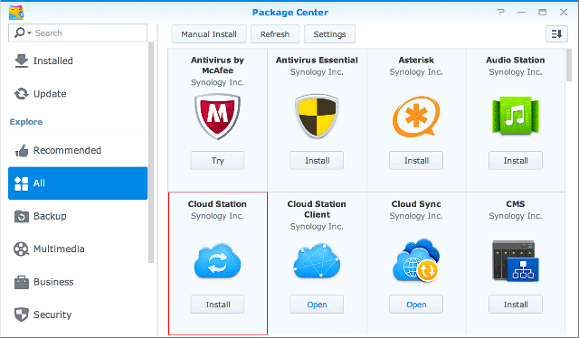

Overzicht
Cloud Station voor Synology NAS is een bestandssynchronisatietoepassing waarmee u eenvoudig bestanden van uw Synology NAS met andere apparaten kunt synchroniseren, zoals computers of mobiele apparaten (met DS cloud). Nadat Cloud Station op uw Synology NAS en computer is geïnstalleerd, worden de in een specifieke map op uw computer opgeslagen bestanden automatisch gesynchroniseerd met uw Synology NAS.
1. Cloud Station installeren
- Ga naar Package Center, zoek Cloud Station en klik vervolgens op Installeren. 
2. Cloud Station inschakelen
- Start Cloud Station op.
- Als u de functie gebruiker basismap nog niet hebt ingeschakeld, wordt u gevraagd om dit te doen. Klik op OK.
- U wordt omgeleid naar de pagina met de gebruikersinstellingen. Schakel de gebruiker basismapinstelling in en klik op Toepassen.
- Ga terug naar Cloud Station en u wordt gevraagd om het in te schakelen. Klik op Ja.
- Ga naar Rechten en geef op welk gebruikers Cloud Station kunnen gebruiken. Klik op Opslaan.


3. Client installeren en inschakelen
- Ga naar Cloud Station > Overzicht en klik op de knop Computers.
- Klik op de knop om Cloud Station voor uw besturingssysteem te downloaden. (U kunt Cloud Station ook downloaden vanaf Synology Downloadcenter.)
- Start het installatieprogramma op uw computer en volg de scherminstructies.
- Voer na de installatie Cloud Station uit op uw computer. Klik op Nu starten.
- Voer het adres in voor het Synology NAS waarop Cloud Station (of QuickConnect ID) wordt uitgevoerd, samen met uw gebruikersnaam en wachtwoord. U kunt op het zoekpictogram rechts klikken om naar IP's binnen uw LAN te zoeken. Klik op Volgende.
- Selecteer hoe u uw taak wilt instellen (hier selecteren we Snelle installatie) en klik vervolgens op Volgende.
- Klik op Voltooien om de instelling van uw Cloud Station-map te voltooien.
- Klik op Nu openen om uw Cloud Station-map te openen.
- U vindt het pictogram Cloud Station in uw systeemvak.
- Dubbelklik op het pictogram Cloud Station om het lademenu te openen. Hier kunt u de voortgang en status van uw bestanden bekijken. Klik op Hoofdtoepassing om Cloud Station te starten.
- Bij het opstarten worden tips getoond over het gebruik van Cloud Station. Klik op het rechterpijltje voor meer tips of klik op Ga naar onlinetutorials voor meer informatie. Hebt u geen tips nodig, klikt u op de optie Niet meer weergeven.
- Nu kunt u uw synchronisatietaken beheren in Cloud Station.


4. Gegevens synchroniseren naar uw mobiele apparaten
DS cloud is gratis beschikbaar op Apple App Store en Google Play Store. U kunt ook de onderstaande QR-code scannen en rechtstreeks downloaden.